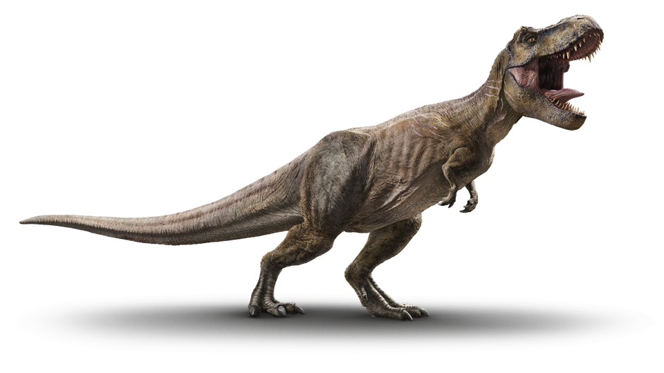
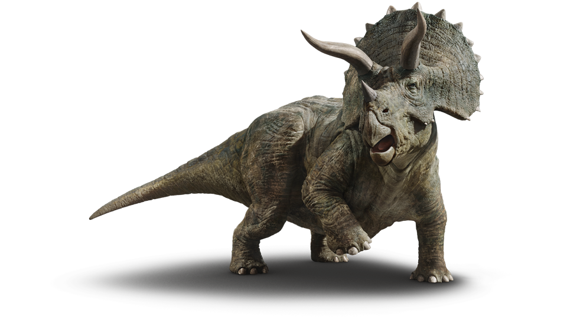

Below is some info about some of the Dino's
We love music
The prehistoric reptiles known as dinosaurs arose during the Middle to Late Triassic Period of the Mesozoic Era, some 230 million years ago. They were members of a subclass of reptiles called the archosaurs (“ruling reptiles”), a group that also includes birds and crocodiles. Scientists first began studying dinosaurs during the 1820s, when they discovered the bones of a large land reptile they dubbed a Megalosaurus (“big lizard”) buried in the English countryside. In 1842, Sir Richard Owen, Britain’s leading paleontologist, first coined the term “dinosaur.” Owen had examined bones from three different creatures–Megalosaurus, Iguanadon (“iguana tooth”) and Hylaeosaurus (“woodland lizard”). Each of them lived on land, was larger than any living reptile, walked with their legs directly beneath their bodies instead of out to the sides and had three more vertebrae in their hips than other known reptiles. Using this information, Owen determined that the three formed a special group of reptiles, which he named Dinosauria. The word comes from the ancient Greek word deinos (“terrible”) and sauros (“lizard” or “reptile”).
Since then, dinosaur fossils have been found all over the world and studied by paleontologists to find out more about the many different types of these creatures that existed. Scientists have traditionally divided the dinosaur group into two orders: the “bird-hipped” Ornithischia and the “lizard-hipped” Saurischia. From there, dinosaurs have been broken down into numerous genera (e.g. Tyrannosaurus or Triceratops) and each genus into one or more species. Some dinosaurs were bipedal, which means they walked on two legs. Some walked on four legs (quadrupedal), and some were able to switch between these two walking styles. Some dinosaurs were covered with a type of body armor, and some probably had feathers, like their modern bird relatives. Some moved quickly, while others were lumbering and slow. Most dinosaurs were herbivores, or plant-eaters, but some were carnivorous and hunted or scavenged other dinosaurs in order to survive.
At the time the dinosaurs arose, all of the Earth’s continents were connected together in one land mass, now known as Pangaea, and surrounded by one enormous ocean. Pangaea began to break apart into separate continents during the Early Jurassic Period (around 200 million years ago), and dinosaurs would have seen great changes in the world in which they lived over the course of their existence. Dinosaurs mysteriously disappeared at the end of the Cretaceous Period, around 65 million years ago. Many other types of animals, as well as many species of plants, died out around the same time, and numerous competing theories exist as to what caused this mass extinction. In addition to the great volcanic or tectonic activity that was occurring around that time, scientists have also discovered that a giant asteroid hit Earth about 65.5 million years ago, landing with the force of 180 trillion tons of TNT and spreading an enormous amount of ash all over the Earth’s surface. Deprived of water and sunlight, plants and algae would have died, killing off the planet’s herbivores; after a period of surviving on the carcasses of these herbivores, carnivores would have died out as well. Despite the fact that dinosaurs no longer walk the Earth as they did during the Mesozoic Era, unmistakable traces of these enormous reptiles can be identified in their modern-day descendants: birds. Dinosaurs also live on in the study of paleontology, and new information about them is constantly being uncovered. Finally, judging from their frequent appearances in the movies and on television, dinosaurs have a firm hold in the popular imagination, one realm in which they show no danger of becoming extinct.
Brachiosaurus

Some Dino's communicating
Spinosaurus
Video of Brachiosaurus
Video of Dinosaurs communicating
Video for Spinosaurus